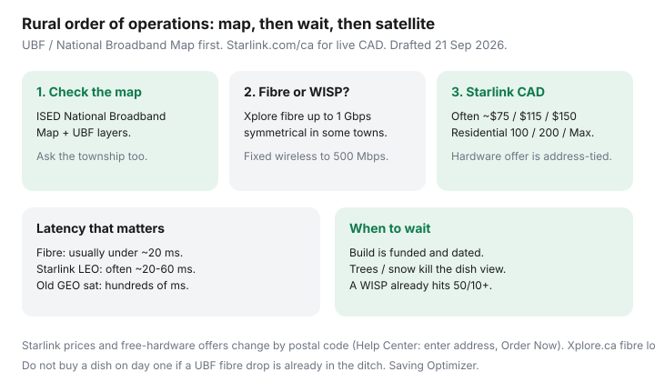

Internet · Canada
Starlink vs Rural Fixed Wireless and Fibre in Canada: Cost, Latency, and When to Wait
Rural Canadian internet is not “buy Starlink on day one.” It is a sequencing problem: is funded fibre or decent fixed wireless already in the ditch? If yes, waiting can save the hardware dance and a monthly that looks cheap next to 2019 satellite and expensive next to a $55 town fibre plan. If no, Starlink’s 2026 Canadian residential prices are a different product than the old $140-and-a-$400-dish story — still not fibre, still weather- and tree-sensitive.
Use the same address sheet as urban shoppers, then add ISED’s map and a WISP. If a Connecting Families letter is on the fridge and a participating ISP appears, start there.
Disclosure: No Starlink, Xplore, or ISP partnership. No hardware affiliate on this page. Prices and free-kit offers change by postal code; Starlink tells you to check Order Now. Education only — not an install design.
Key takeaways
- Check ISED’s National Broadband Map (current services + UBF-Core / UBF-RRS layers) and the builder’s fibre lookup before you spend on a dish.
- Starlink Help Center: pricing is address-specific. 2026 Canadian clusters often show Residential ~$75 / $115 / $150 before tax; hardware may be a free rental plus ~$19 shipping, a purchase, or a demand surcharge in busy codes.
- LEO latency is usually in a usable WFH band; it still loses to fibre. Data-priority and roam vs residential plans matter if the kit will travel.
- Xplore and regional WISPs: fibre up to 1 Gbps symmetrical in some towns; fixed wireless up to 500 Mbps — terrestrial, local techs, different failure modes (tower vs sky).
- Trees, snow, HOA/roof rules, and northern obstruction maps kill installs. Decision tree: wait / WISP / commit.
Check the address for upcoming fibre or fixed wireless (UBF-era builds)
The Universal Broadband Fund is the federal contribution stream meant to push underserved households toward 50/10 Mbps. ISED’s National Broadband Map is the public layer: current available services versus government-supported UBF-Core and Rapid Response hexagons. Road-segment coverage can lag reality and can also over-promise. Pair the map with:
- The ISP actually digging (Xplore fibre lookup, regional telco, municipal utility, First Nation network).
- Township or county broadband updates — construction years slip.
- A neighbour on the same sideroad, not a hamlet 12 km away.
If the map says a UBF fibre project covers your hexagon and the builder’s site says “construction phase, leave your email,” that is a waitlist, not a modem. Ask for a calendar quarter. If they will not date it, do not freeze the household on 6 Mbps DSL out of patriotism.

Starlink hardware + monthly CAD pricing framework (verify live)
Starlink’s help article “How much does Starlink cost?” (used 21 Sep 2026) refuses a national sticker: go to starlink.com, enter the address, Order Now, read kit + monthly. That is the only canonical CAD figure.
Independent Canadian 2026 roundups (after the January 2026 price cut coverage) commonly cluster:
| Plan (typical label) | Monthly CAD often shown | Role |
|---|---|---|
| Residential 100 | About $75 | Smaller household, lighter concurrent use; not everywhere |
| Residential 200 | About $115 | Common family / WFH tier where 100 is not offered |
| Residential Max | About $150 | Priority / higher speed marketing; extras rotate |
| Roam / cottage | Wide band (~$75–$200+) | Different product; data caps possible; not your primary-home quote |
| Hardware | Free rental + shipping in many codes, or buy ~$499–$599; Mini separate | Rental means you return the dish if you cancel; urban codes may add a demand surcharge |
MobileSyrup (20 Jan 2026) documented the cut from ~$140 residential and free hardware in select areas, plus a $330 demand surcharge example in Hamilton. FastSat and others noted later 2026 list bumps on some tiers. Your checkout screen wins the argument.
24-month sketch if Residential 100 is $75 and hardware is free plus $22 shipping: about $1,800 + tax. If you must buy a $599 kit, add that. Compare to a quoted Xplore fibre monthly × 24 plus install. Do not compare to 2018 Xplornet folklore.
Latency and data-priority plan differences that matter for WFH and gaming
- Fibre: often under ~20 ms, stable. Game servers and VPN concentrators behave.
- Starlink LEO: often tens of milliseconds — usable Zoom, much better than GEO. Still jittery versus glass; congestion and obstruction add spikes.
- Legacy GEO satellite: hundreds of milliseconds. Avoid for two-way video if you have any other path.
- Priority / residential vs roam vs standby: a roam bucket on a cottage for August is not the same as a residential service address. Deprioritized data during storms or cell-load is how “unlimited” still feels capped. Read the plan’s fair-use, not a YouTuber’s speedtest in a field in Kansas.
Cloud backup and two simultaneous Huddle calls want upload and stability more than a 300 Mbps download screenshot. If fibre 50/50 is coming in six months, a short LTE/WISP bridge can beat a dish you will resell at a loss.
Xplore and regional WISPs as terrestrial alternatives
Xplore positions itself as Canada’s largest independent rural ISP: 100% fibre in some towns (up to 1 Gbps symmetrical), 5G/LTE-class fixed wireless up to 500 Mbps with unlimited-data marketing, local technicians. Use xplore.ca fibre lookup and the general address tool. Other WISPs are hyperlocal — a tower co-op, a hydro telecom, a First Nation ISP. Vet them like a contractor: advertised vs evening speed, data policy, install quote, and whether they are on CCTS.
Fixed wireless fails in foliage and rain differently than Starlink. Line of sight to a tower is the obstruction map. Ask for a site survey before you compare monthlies.
Weather, trees, and install constraints on Canadian properties
- Need a clear view of the relevant sky. A treeline on the south/southeast of a Canadian lot is a classic fail.
- Snow on the dish: plan to brush or mount where you can reach without a death-on-the-roof story.
- HOA, rental, and conservation-authority rules. A tenant may need written permission; a dish on a heritage roof is not “just Amazon.”
- Power and ethernet run to the mount. Budget cable and a well-located power outlet, not only the monthly.
- Wildlife and ice. Rural is not a balcony in Toronto.
Decision tree: wait for fibre, choose WISP, or commit to satellite
- CFI letter + participating ISP on the portal → enrol. $10/$20 beats almost every rural retail story if the plant exists.
- Fibre available now (Xplore or telco) → prefer it for latency and resale of the house. Price install honestly.
- Fibre funded and dated within a horizon you can live with (ask for a quarter) → consider LTE/WISP or even a short Starlink rental if the contract lets you return hardware; do not buy a 10-year dish identity.
- WISP hits 50/10+ with decent evening tests → compare 24-month CAD and support to Starlink. Local truck rolls vs a mobile app.
- No terrestrial path, no dated fibre → Starlink (or another LEO, if any qualifies) is the adult choice. Pick the residential plan the address actually offers; read hardware return rules.
Revisit the map every six months. UBF projects complete. Starlink prices move. A dish is a tool, not a personality.
Sources & date stamps
- Starlink Help Center, “How much does Starlink cost?” — address + Order Now is canonical (used 21 Sep 2026).
- Starlink.com/ca — live checkout; 2026 Canadian consumer clusters $75 / $115 / $150 from secondary sites (Budget Seniors, InternetAdvice, FastSat). Confirm live.
- MobileSyrup, 20 Jan 2026 — residential price cut and free-hardware / demand-surcharge reporting.
- ISED National Broadband Map and UBF data notes — current vs government-supported layers; 50/10 underserved definition.
- Xplore.ca — fibre lookup; fibre up to 1 Gbps symmetrical; fixed wireless up to 500 Mbps (used 21 Sep 2026).
- ISED Connecting Families — volunteer ISP list; Starlink is not a CFI SKU.
Frequently asked questions
Should I buy Starlink today if fibre is “coming”?
Only after you check ISED’s National Broadband Map (UBF layers) and the builder’s address tool. If a funded drop is dated and you can live with LTE/WISP or a library year, waiting can beat a dish plus a monthly you will abandon. If the ‘coming’ is vapour, order the kit.
What does Starlink cost in Canada right now?
It is postal-code specific. 2026 consumer write-ups cluster Residential 100 / 200 / Max around $75 / $115 / $150 per month before tax, with hardware often a free rental plus shipping — or a purchase around $499–$599 — and urban demand surcharges in some codes. Starlink’s own help centre: enter the address and click Order Now.
Is Starlink fine for work-from-home video?
Often yes on latency versus old geostationary satellite (LEO commonly tens of milliseconds, not 600). It is still not fibre. Trees, snow on the dish, congestion, and deprioritized roam plans can still ruin a Monday standup. Test a return window if you have one.
How does Xplore fit?
Xplore is a large rural independent: fibre up to 1 Gbps symmetrical in some towns, fixed wireless up to 500 Mbps in others, address lookup on xplore.ca. It is terrestrial. Compare latency, data priority, and install constraints against Starlink at the same civic address.
Can I use Connecting Families on Starlink?
CFI is volunteer wired ISPs on ISED’s list. Starlink is not that list. If the CFI portal shows no ISP, keep the letter; do not assume a $10 Starlink SKU exists.